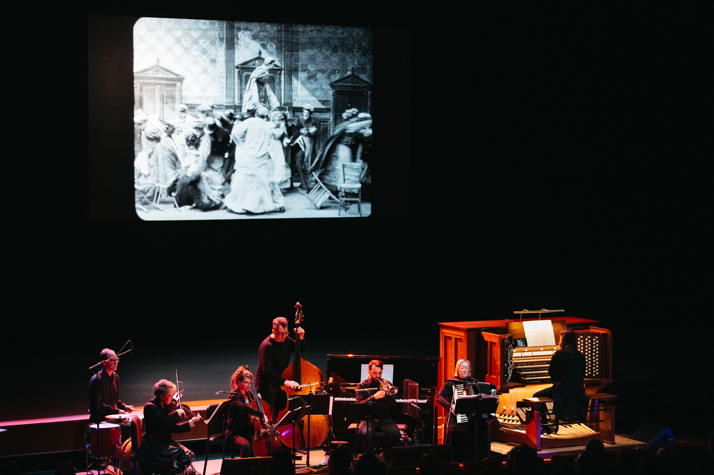

Silent films
 photo by Jayme Halbritter copyright 2023
Dreamland Faces have composed and performed original scores to many silent films. Here are some of our favorites:
Curated Live Film Programs
Northrop Presents Cinema's First Nasty Women: CONTAGIOUS REVENGE
- The Dairymaid's Revenge (US, 1899, 2 min)
- La grève des nourrices (France, 1907, 12 min)
- Victoire a ses nerfs (France, 1907, 3 min)
- Zoé et la parapluie miraculeux (France, 1913, 4 min)
- Rembrandt de la rue Lepic (France, 1911, 6 min)
- La pile électrique de Léontine (France, 1910, 6.5 min)
- Laughing Gas (US, 1907, 7.5 min)
- Daisy Doodad's Dial (U.K., 1914, 9 min)
- La peur des ombres (France, 1911, 4 min)
- The Night Rider (US, 1920, 25 min)
Northrop Presents Hysteria, Hypnosis, and Hallucination: Silent Cinema Shorts
read more here: https://dreamlandfaces.github.io/hysteria/
- At the Hypnotist's (Chez le magnétiseur), Alice Guy-Blaché, Gaumont, France, 1897
- Hypnotizing the Hypnotist, Laurence Trimble, Vitagraph, US, 1911
- Rosalie Has Sleeping Sickness (Rosalie a la maladie du sommeil), Pathé, France, 1911
- Cunégonde the Coachwoman (Cunégonde femme cochère), Lux, France, 1913
- Love and Science (Amour et science), M.J. Roche, Éclair, France, 1912
- The Mystery of the Rocks of Kador (Le mystère des roches de Kador), Léonce Perret, France, 1912
Twin Cities Silent Film Project
- PHIL FOR SHORT (Apfel, 1919)
- FIRST FLAME (1920)
- PRINCESS NICOTINE; OR, THE SMOKE FAIRY (1909)
Working Class films at Northern Spark 2015
- A Corner in Wheat (Griffith, 1909)
- Labor's Reward (AFL,1925)
Dreamland Films: Treasures from the Eastman House
Experimental films & 28mm documentaries Restored by the George Eastman House Curated by Pat Doyen for Dreamland Faces.
- Haunted Hotel (Blackton) very early humorous horror
- Making a Record (c. 1919) documentary
- Mushroom Growing (c. 1915) documentary
- How the Cowboy Makes his Lariat (1917) documentary
- Bottom of the Sea (c. 1914) rare animation
- Very early X-ray films (Watson)
- In the Shadow of the Pyramids (c. 1915) travel documentary
- Houdini stunts, live footage (c. 1909-1923)
- Felix the Cat Flirts with Fate (Messmer, 1926)
- Felix Trifles with Time (Messmer, 1925)
- Dreamy Dud (1916) rare animation
- Kaleidoscope: very early color (c. 1925)
- Love, Snow and Ice: Ice carnival documentary (1915)
- Laureate (Etting, 1940) silent art film in early color
Pioneers of Animation
Ten early animated films Restored by the George Eastman House
- Scaling the Alps (Terry & Davis, 1923)
- Domestic Difficulties (Fisher, 1916)
- Weary Willies (Freleng and Lantz, 1929)
- Trapped (Fleischer, 1921)
- Breath of a Nation (La Cava, 1919)
- Felix the Cat Flirts with Fate (Messmer, 1926)
- Felix the Cat Trips through Toyland (Messmer, 1925)
- Priscilla and the Pesky Fly (Hopkins, 1916)
- The Old Family Toothbrush (Wilson, 1925)
- Bobby Bumps and his Goatmobile (Hurd, 1916)
Feature Films (Dramas, Horror & Animation)
- BEGGARS OF LIFE (Wellman, 1928)
- BROKEN BLOSSOMS (Griffith, 1919)
- FALL OF THE HOUSE OF USHER (Watson, 1928)
- GRASS (Cooper & Schoedsack, 1925)
- HE WHO GETS SLAPPED (Sjöström, 1924)
- NOSFERATU: A SYMPHONE OF HORROR (Murnau, 1922)
- PHANTOM OF THE OPERA (Julien, 1925)
- SHOES (Weber, 1916)
- SUSPENSE (Weber, 1913)
- THE LION BECOMES OLD (Starewicz, 1932)
- THE PLEASURE GARDEN (Hitchcock, 1925)
- PRINCE ACHMED (Reiniger, 1926)
- SOUTH: ERNEST SHACKLETON AND THE ENDURANCE EXPEDITION (Hurley, 1919)
- THE UNKNOWN (Browning, 1927)
- THE WIND (Sjöström, 1928)
- TOKYO CHORUS (Ozu, 1931)
- VAMPYR (Dreyer, 1932)
Comedies from the Slapstick/Vaudeville Canon
Buster Keaton:
- Shorts: One Week, Neighbors, The Scarecrow, The Haunted House, The Goat, The Boat, Cops, My Wife's Relations, The Electric House, The Balloonatic
- Features: Three Ages, Our Hospitality, Sherlock Jr., The Navigator, Seven Chances, The General, Steamboat Bill, Jr., The Cameraman, Spite Marriage
Roscoe Arbuckle: Coney Island, The Cook
Charlie Chaplin: The Rink, The Cure
Harold Lloyd: Speedy, Safety Last
Laurel & Hardy: Big Business
Teddy at the Throttle
DVD Scores
Cinema’s First Nasty Women - Kino Lorber DVD/Blu-Ray
- Léontine en vacances
- Rosalie a la maladie du sommeil
- Les femmes cochers
- Girl Spy: An Incident of the Civil War
- A Range Romance
- Ventilateur Breveté (The Air Fan)
- Mary Jane's Mishap
- Her First Biscuits